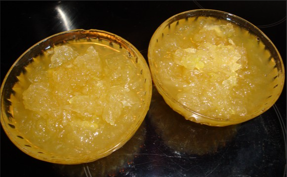

Compota de Chuchu

Ingredientes
- • 4 chuchus com casca
- • 500 g de açúcar
- • 1 xícara (chá)
de água
- • Suco e casca de
1 limão pequeno
Modo de preparo
- Lave bem os chuchus, corte -os ao
- meio, retirando a parte central, e
- rale -os no ralo grosso. Reserve.
- Faça uma calda com o açúcar e a
- água, acrescente os chuchus, o suco
- de limão e a casca de
- limão. Cozinhe até ficar macio.
Voltar